-=Sydney=-
Sydney is Vancouver meets Baltimore. An inner harbor, unpredictable mix of quirky new and quirky old architecture; clean, asian influence, low-crime, seafront.
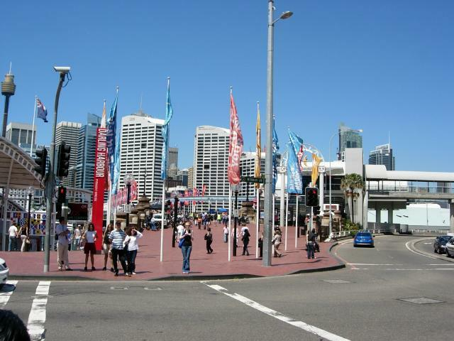
Plaza at Darlington Harbor, one of several tourist districts.
The skyscrapers read IBM, PriceWaterhouse, KPMG, Cisco, United, Veritas, Aon...globalization on the hoof. CSC isn't here, it's out in a Silicon Valley-type suburb. The IT market is weak now; one team member commutes from Sydney to Canberra three days a week to get sufficient coverage.
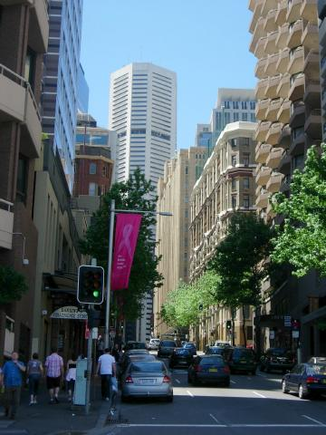
Baltimorean quirky mix of architecture.
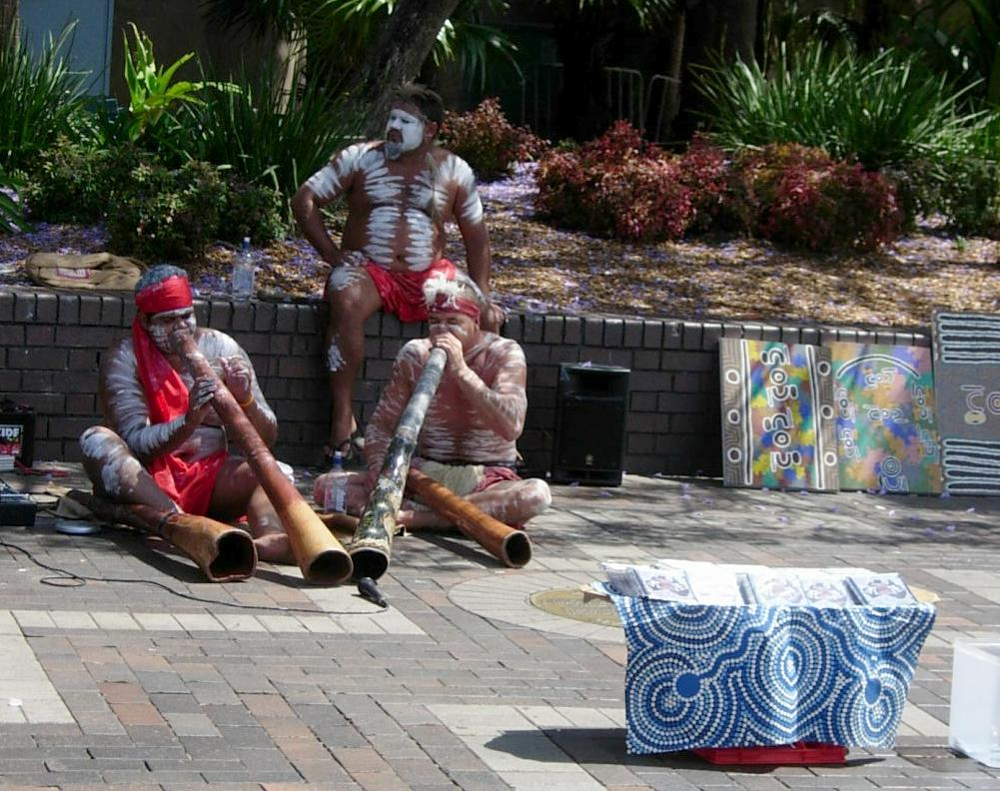
Dig duo selling CDs
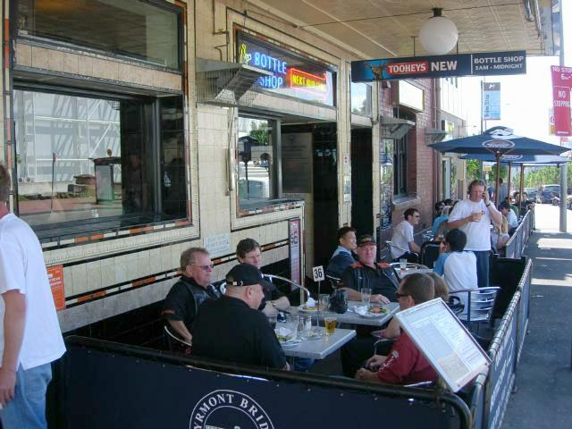
This weekend was a bike rally. HOG blokes at a pub. They tell me it'd be better to buy a bike here than ship mine; some dealers offer guaranteed buyback programs.
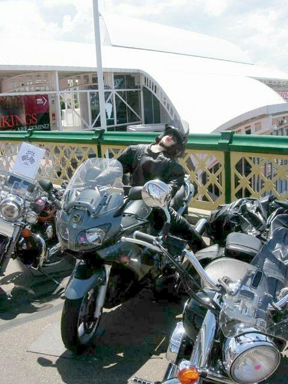
Typical for bikers, but I can't see a sex doll on a bike in the central tourist zone of a US city going unchallenged. But Oz is a pc-free zone (see below).
Q: How many feminists does it take to change a light bult?
A: THAT'S NOT FUNNY!
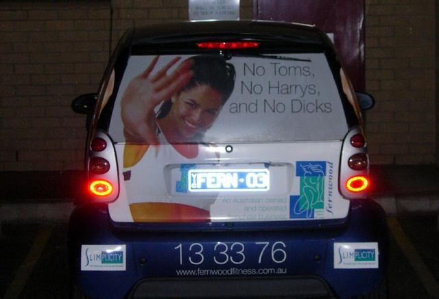
Ad for women's gym (Canberra)
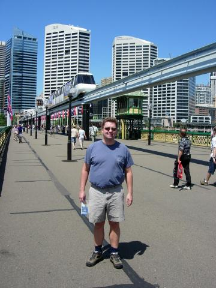
Peter and the monorail
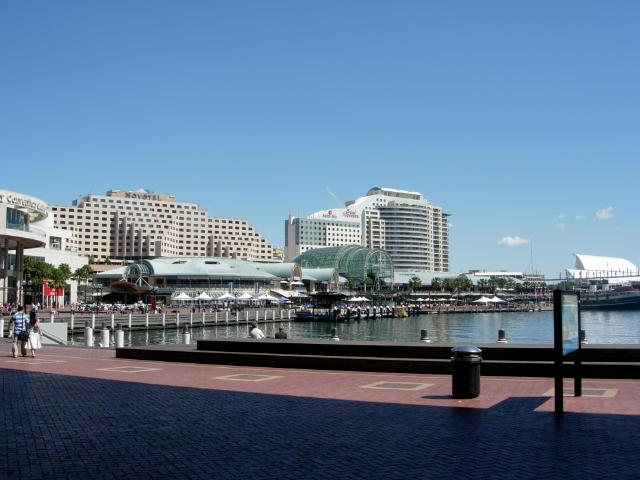
Darlington Harbor in the day
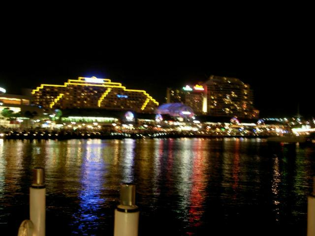
And night
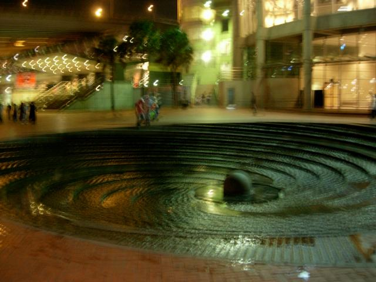
Highly cool fountain. One of the spirals is dry to let kids walk to the center. The steps cause the water to strobe in sunlight. This picture captures the effect.
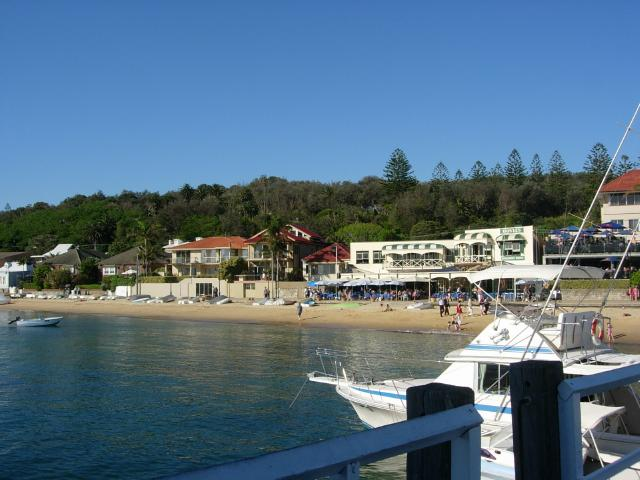
Sydney lies on the south side of a bay extending westward into the continent. There are frequent ferries to other parts of the bay, such as Manley, Shark Beach, and Watson's Cove (above)
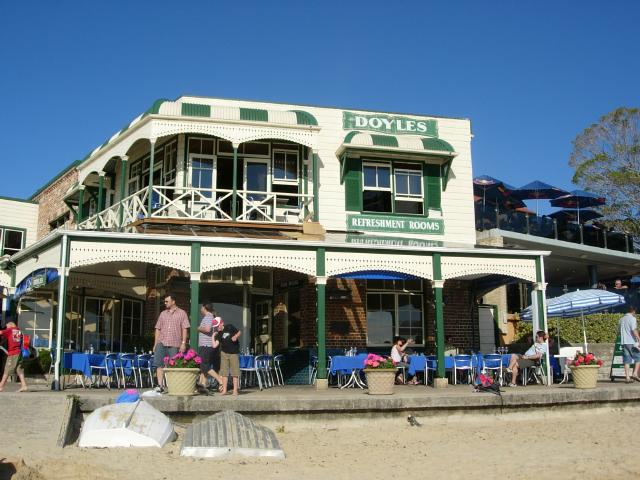
How not to market a credit card. Doyle's seafood is the subject of one of Visa's "you can't use American Express here" ads. Our waitress took a survey; she says the majority of customers think they ONLY take Amex, and some become quite upset when they don't, because the ad says.
Had fried John Dory. Recommended.
For those with bandwidth
That's what I hate about this job...all work and no play (14MB, QT)